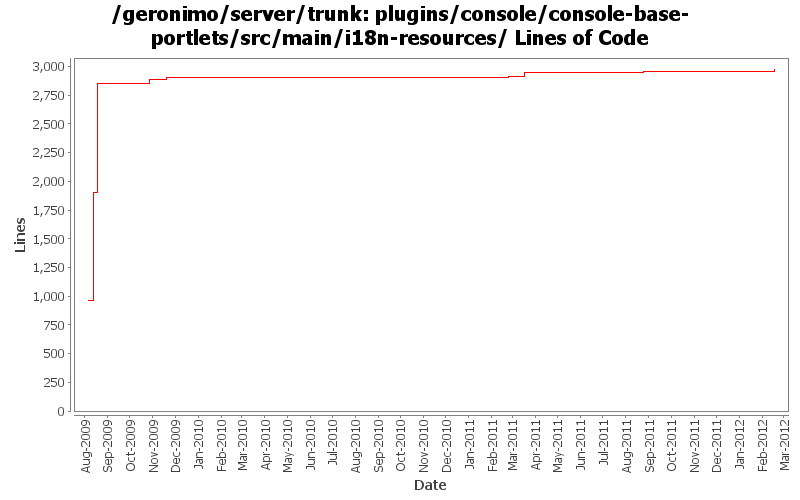

[root]/plugins/console/console-base-portlets/src/main/i18n-resources

| Author | Changes | Lines of Code | Lines per Change |
|---|---|---|---|
| Totals | 54 (100.0%) | 2463 (100.0%) | 45.6 |
| xuhaihong | 16 (29.6%) | 956 (38.8%) | 59.7 |
| gawor | 4 (7.4%) | 948 (38.5%) | 237.0 |
| kevan | 5 (9.3%) | 388 (15.8%) | 77.6 |
| genspring | 3 (5.6%) | 65 (2.6%) | 21.6 |
| rwonly | 12 (22.2%) | 52 (2.1%) | 4.3 |
| djencks | 3 (5.6%) | 33 (1.3%) | 11.0 |
| xiaming | 9 (16.7%) | 21 (0.9%) | 2.3 |
| rickmcguire | 2 (3.7%) | 0 (0.0%) | 0.0 |
GERONIMO-6276 Not restart connector if user wants to update the serving connector and feed back a warning message in the portlet, for trunk
11 lines of code changed in 3 files:
GERONIMO-6250 Missing a line of message for admin console ConnectorPortlet for maxParameterCount property, for trunk
4 lines of code changed in 3 files:
GERONIMO-6250 Add maxParameterCount to gbean attribute for easy configuaration from admin console to 3.0 trunk, patch provided by Yi Xiao
6 lines of code changed in 3 files:
GERONIMO-6059 rename "J2EE Connectors" to "Java EE Connectors" in console.
7 lines of code changed in 3 files:
GERONIMO-6059 New look and feel of Geronimo 3.0 admin console (Step 1)
3 lines of code changed in 3 files:
GERONIMO-5847 (GERONIMO-5871) add blueprint type support
3 lines of code changed in 3 files:
GERONIMO-5847 improve info/warning/error messages
39 lines of code changed in 3 files:
GERONIMO-5769: A separate portlet for displaying web application bundles
6 lines of code changed in 2 files:
merge in header file changes from M1
0 lines of code changed in 2 files:
GERONIMO-4977 Geronimo EN/Simp.Chinese UI information improvement for Console, thanks Jeff for the patch !
61 lines of code changed in 2 files:
GERONIMO-4678 translation for rev 883582
2 lines of code changed in 1 file:
Add help messages to repository portlet
6 lines of code changed in 3 files:
GERONIMO-4658 Pick up missing i18n messages. Patch from Kan Ogawa. Many thanks!
12 lines of code changed in 3 files:
GERONIMO-4678 merge revision 830798 into trunk. Original patch from Kan Ogawa
376 lines of code changed in 2 files:
GERONIMO-4658 Editor for artifact aliases. original patch from Victor Fang, with modifications. Merge from 2.2 with little attempt to fix problems
33 lines of code changed in 3 files:
GERONIMO-4603 PropertiesLoginManager is hardwired to properties-login login module
3 lines of code changed in 3 files:
GERONIMO-4851 Server will get into abnormal status when trying to edit/delete Tomcat Connector HTTPS BIO network listener
4 lines of code changed in 1 file:
Initial Japanese translation. Patch from Kan Ogawa (GERONIMO-4678)
942 lines of code changed in 2 files:
GERONIMO-4769 Add English resource bundle for Admin console (Patch from Jack Cai)
945 lines of code changed in 5 files:
GERONIMO-4763 i18n properties files should be converted to ascii at build time. (Patch from Shawn Jiang)
0 lines of code changed in 4 files: